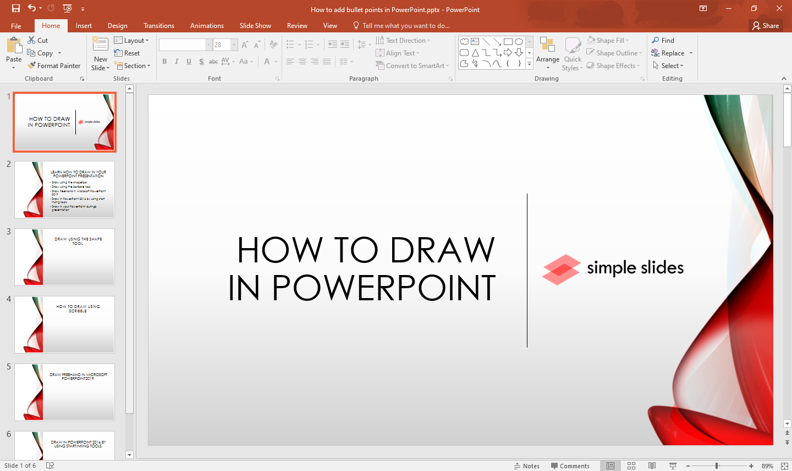

O PowerPoint é um programa utilizado para criar apresentações de slides, muito comum em ambientes escolares, acadêmicos e profissionais. Ele permite combinar textos, imagens, gráficos, vídeos e animações em slides organizados de forma visual e atrativa. Com o PowerPoint, é possível explicar ideias, projetos e conteúdos de maneira clara e dinâmica, facilitando a comunicação com o público. Além disso, o programa oferece modelos prontos e ferramentas de design, o que ajuda na criação de apresentações com aparência profissional, mesmo para quem tem pouca experiência.
Um slide é uma ferramenta visual usada principalmente em apresentações para transmitir informações de forma clara, organizada e atraente. Ele serve como apoio para quem está apresentando, ajudando a destacar os pontos principais de um conteúdo e facilitando a compreensão do público. Com os slides, é possível combinar textos curtos, imagens, gráficos, tabelas, vídeos e animações, o que torna a explicação mais dinâmica e envolvente. Eles ajudam a manter a atenção das pessoas e são ideais para resumir ideias, mostrar dados e reforçar mensagens importantes. Os slides são amplamente utilizados em escolas, universidades, empresas e eventos, tanto para ensinar quanto para apresentar projetos, relatórios e propostas. Além disso, com o uso de ferramentas como o PowerPoint, é possível criar apresentações com designs profissionais, mesmo com pouco conhecimento técnico. Assim, os slides se tornam uma exelente forma de comunicação visual em diferentes contextos.
| Função | Descrição |
|---|---|
| Criar slides | Permite montar uma sequência de telas para apresentar o conteúdo. |
| Inserir textos | Adiciona títulos, frases e explicações com diversas opções de fonte e cor. |
| Adicionar imagens | Insere fotos e figuras para ilustrar e reforçar a apresentação. |
| Inserir gráficos e tabelas | Ajuda a mostrar dados de forma organizada e visual. |
| Incluir vídeos e áudios | Deixa os slides mais dinâmicos e interativos. |
| Aplicar temas prontos | Utiliza modelos de design para deixar os slides mais bonitos. |
| Usar transições e animações | Cria efeitos entre slides ou elementos para destacar informações. |
| Editar ordem dos slides | Reorganiza os slides para melhorar a sequência da apresentação. |
| Salvar, imprimir e compartilhar | Permite armazenar o arquivo, imprimir ou enviar para outras pessoas. |
| Modo apresentação | Mostra os slides em tela cheia para o público durante a explicação. |